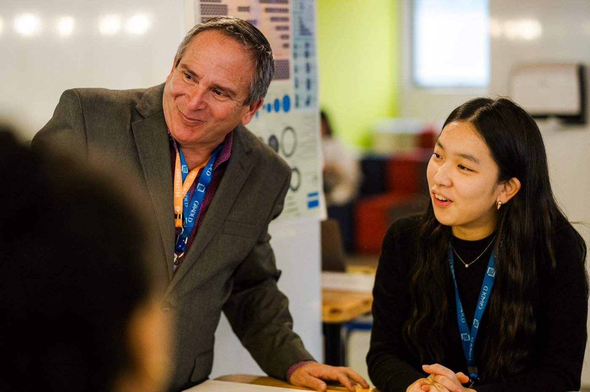
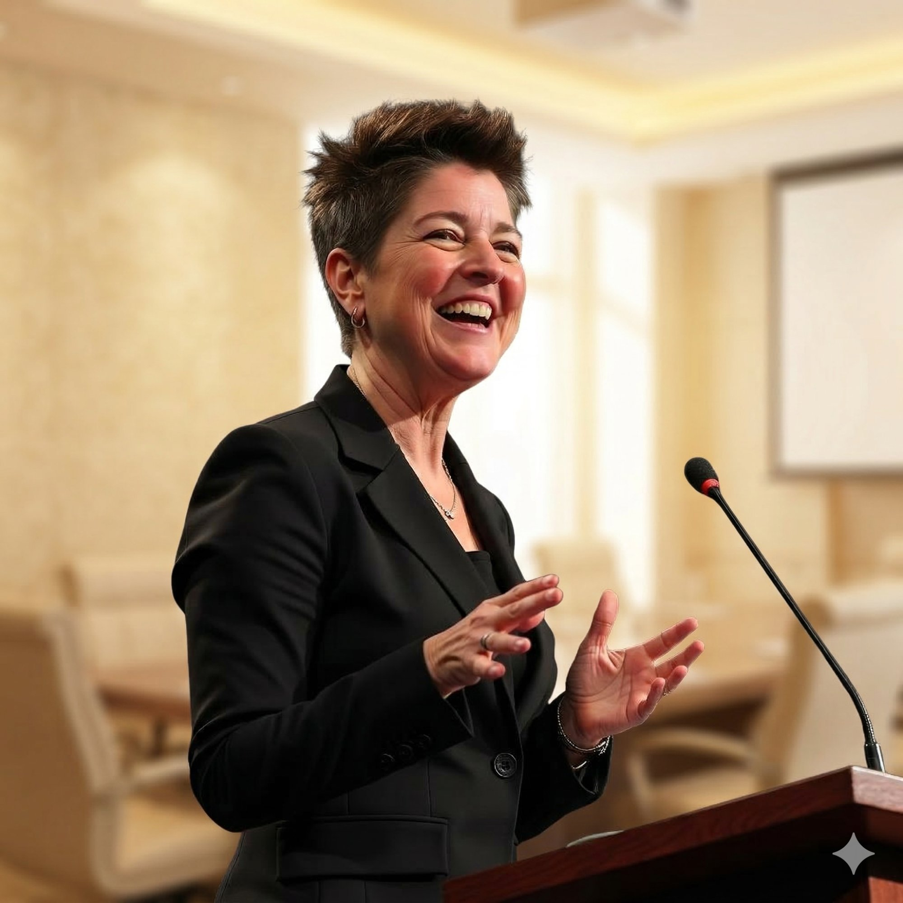
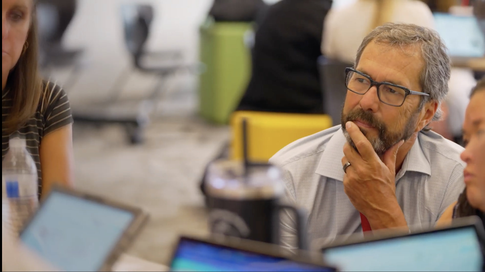
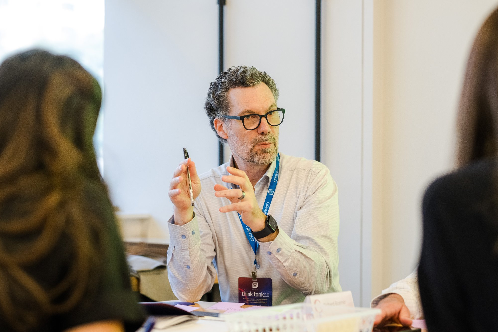
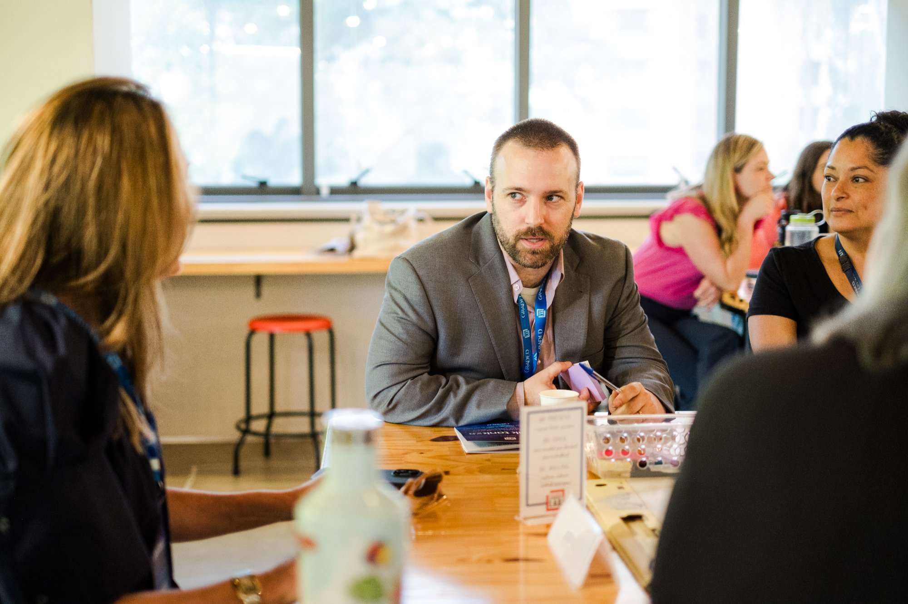

We Make
Heroes.
Educators who thrive are the surest path
to learners who thrive.
Education Accelerated partners with school districts, international schools, associations, and mission-driven education organizations to build the educator development ecosystems that make great teaching sustainable, and student learning personal. When educators master the triad of learning science, learning design, and learning engineering, they can personalize every student's pathway to a personal success outcome.
We know what it takes to make that possible. Let's talk about what's at the top of your list.
Teaching is not a job.
It is the most heroic act
a civilization can ask of its people.
Heroes are not born. They are forged through challenge, through mentorship, through systems designed to demand and develop the best in them. Most school systems were built to manage educators, not to grow them. We built something different.
And when educators grow with intention, mastering the science of learning, the design of learning, and the engineering of learning, something changes in every classroom they walk into. Students stop being sorted. They start being seen. Their learning becomes personal. Their pathway becomes theirs.
They see their students differently. That's the connection we build for."
"America is not facing an educator shortage.
It is facing an educator ecosystem failure."
David B. Palumbo & Adam Rubin · Education Accelerated & 2Revolutions
Most systems set educators up to fail before they begin.
The industrial model of education was never designed to grow people. It was designed to sort them. Educators enter one of the most demanding professions on earth and are handed a key, a roster, and a wish of good luck.
No Pipeline
Schools wait for certified teachers instead of growing their own. The heroes are out there, in high schools, in communities, and the system ignores them. Every unfilled classroom is a learner without a guide.
Sink or Swim Induction
New educators are handed a classroom and left to figure it out. The most formative years of a teaching career are also the most unsupported, and students in those classrooms absorb every cost of that isolation.
No Path Forward
Veterans plateau. There is no structural investment in the educator who has been teaching for fifteen years and still has fifteen more to give. When great teachers stop growing, their students stop getting the best of them.
Thriving educators.
Thriving learners.
We know how to build both.
Teaching dyads, one mentor teacher paired with one apprentice, consistently produce higher rates of student growth and proficiency than even the most experienced solo classrooms. That's not a theory. That's what happens when you invest in the relationship structure of teaching, not just the individual.
We don't position ourselves as the hero of this story. You are. Your educators are. We're the guide who knows the terrain, holds the framework, and refuses to let the hero fail for lack of support.
See the Educator LifecycleEvery educator's journey
has nine chapters.
Most systems invest in two or three of them and call it a pipeline. We build all nine, because the hero's journey does not end at certification. It deepens across a forty-year career.
Every engagement starts
with your priority.
We don't show up with a pre-packaged solution. We start with a conversation about what's at the top of your list, and build from there. Every EA engagement has a front door tailored to where you actually are.
Tell us where you want to start.
Structured. Targeted. Proven.
Every EA engagement is structured around two proprietary frameworks. They are what separate a consulting visit from a lasting change in how a system operates.
"Factories make widgets. Ecosystems grow people. We build ecosystems."
Education AcceleratedWe work where the stakes are highest.

Aurora Public Schools
Destination District work, leadership alignment, and educator development architecture in one of Colorado’s most diverse urban school systems.
U.S. District Partnership
Colegio Americano de Guatemala
A three-day Future of Learning Think Tank that helped nearly fifty stakeholders align around seven KeySTONE priorities.
International School
AAIE Think Tank: Washington, DC
A global leadership Think Tank that brought together forty international school leaders and sent each home with a concrete innovation playbook.
Association PartnershipWhat leaders say
when the system changes.
This is important work that I personally prioritize. Education Accelerated brought the clarity and structure we needed, a roadmap that makes building a true destination district feel not just visionary, but doable.
Education Accelerated helps us challenge the limits and the boundaries of what is possible at CAG in ways that seem aligned, innovative, and actionable.
What Education Accelerated designs is rare, a process that brings every voice into the room and produces decisions that actually hold. Most schools plan. This community designed.
Built by practitioners,
not theorists.
Every member of the EA team has stood in front of a classroom, led a school, or built a system from scratch. We don't consult from a distance. We work from inside.





Your educators are ready.
Your learners are waiting.
We know what thriving educators look like, and we know what they make possible for every student in front of them. EA works with a small number of partners at any given time. That's by design. Tell us what's at the top of your list and we'll take it from there.
We work with a small number of partners. We'll respond within one business day.